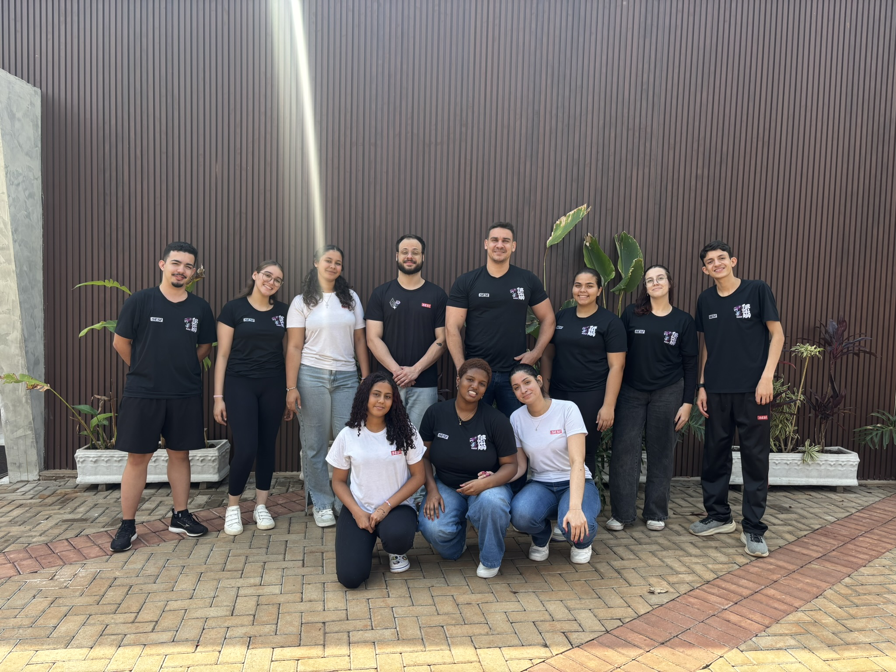

Bebedouro, SP
--
--°
Última leitura do sistema
Clima Atual na Escola
Probabilidade de Chuva (%)
Temperatura (°C)
Pressão Atmosférica (hPa)
Sobre o Projeto
O Clima+ é um projeto inovador da Escola SESI CE 110, desenvolvido pelos alunos do 3º ano do Ensino Médio. Ele oferece informações precisas e acessíveis sobre probabilidade de chuva, pressão atmosférica e temperatura para a comunidade.
Alunos responsáveis: Estela Camila, Maria Eduarda, Nathalia Gabriele, Stefany Carolline, Maria Luiza, Kauan Henrique, Kauan Rosendo, Ana Beatriz e Laís Rosa.
Professores responsáveis: Rodrigo Antonio Fernandes e Bruno Eduardo Medeiros.
Com o Clima+, buscamos transformar a meteorologia escolar em algo claro, intuitivo e envolvente, conectando aprendizado e comunidade.
